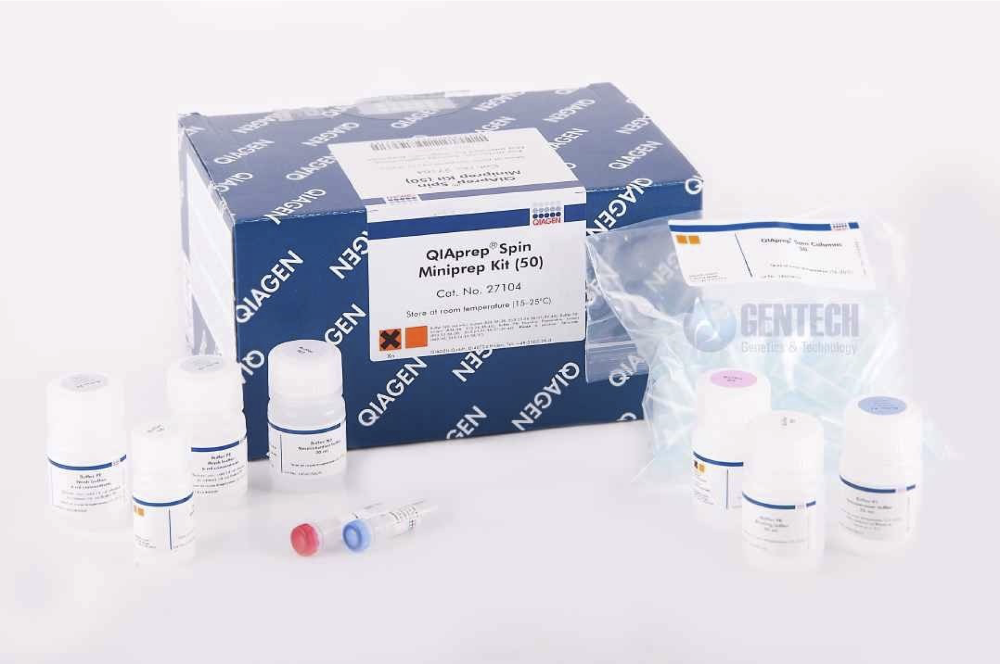
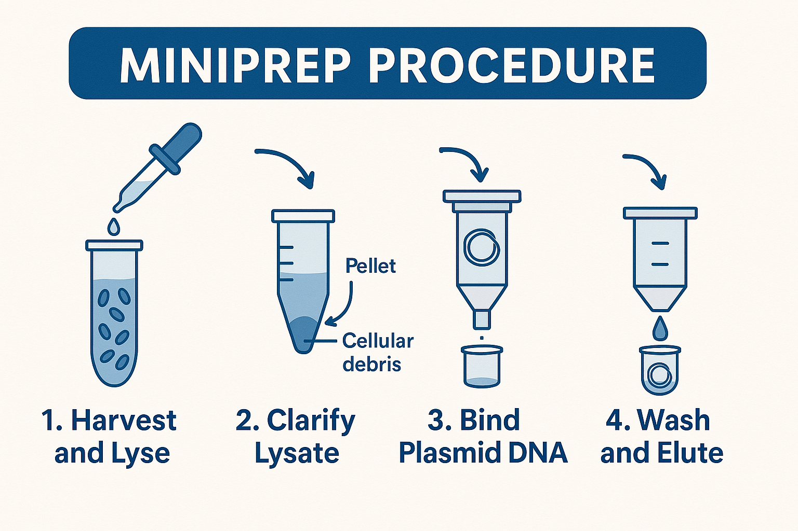

Miniprep: Plasmid DNA Purification¶
Once you’ve picked and grown up an isolated colony, you now have a saturated culture containing billions of identical cells. Each cell carries multiple copies of the plasmid, and a miniprep allows you to extract and purify that plasmid DNA.
Why Miniprep?¶
- Storage — Purified plasmid can be stored at -20°C indefinitely.
- DNA as a Building Block — You often need clean DNA to build or clone further constructs.
- Sequencing — Verifying the plasmid sequence requires pure template.
- Transformation into Other Cells — Requires isolated DNA.
- General Use — Quantification, restriction mapping, and other analytical methods.
Overview¶
 Figure: Components of the Qiagen QIAprep Spin Miniprep Kit. Blue columns, labeled buffers, and RNase A tube shown.
This procedure is similar to the Zymo cleanup, but starts with a bacterial culture. We use the Qiagen QIAprep Spin Miniprep Kit, which uses silica column purification via guanidinium-silica chemistry. (This is not interchangeable with Qiagen anion-exchange kits.)
The protocol below is adapted from Qiagen's handbook, which includes detailed guidance, reagent preparation, and troubleshooting.
📄 Download the full handbook (PDF)
The Qiagen Miniprep Procedure¶
 Figure: Overview of the miniprep workflow — cells are lysed, debris is removed, DNA binds to a spin column, and is then washed and eluted.
🧪 Reagents¶
- P1 Buffer (with RNase A)
- P2 Buffer (NaOH/SDS)
- N3 Buffer (Acidic, with guanidinium)
- PB Buffer (protein/endotoxin removal)
- PE Buffer (70% ethanol)
- EB Buffer (elution)
🧫 Alkaline Lysis¶
- Pellet 1–5 mL saturated culture in a microcentrifuge tube.
- Resuspend in 250 µL P1 (RNase A must be added).
- Lyse by adding 250 µL P2, mix gently (do not vortex).
- Neutralize with 350 µL N3. Invert to mix thoroughly.
- Spin 5 min at max speed to pellet debris.
🧼 Column Binding and Wash¶
- Transfer supernatant to a blue QIAprep column, spin 15 s.
- Add 500 µL PB Buffer, spin.
- Add 750 µL PE Buffer, spin.
- Discard flowthrough, then spin again 90 s to dry.
💧 Elution¶
- Place column in a new 1.5 mL microcentifuge tube. Add 50 µL EB (or water, pH 7–8.5) to center of membrane.
- Spin 45 s to elute DNA.
Note: Avoid ethanol contamination from PE — spin thoroughly before eluting.
Lab Sheet Notes¶
- Clearly label both the top and side of each tube with clone ID (e.g.
pP6-79A). - Store the labeled miniprep tubes in the
minis1box. - Record miniprep location in the box (e.g.,
E3) on your lab sheet. - Minipreps are retained for future use and must be properly inventoried.
Kit Notes¶
- Add RNase A to P1 before use; store in the fridge thereafter.
- Add ethanol to PE buffer before first use. Waft the open tube to confirm ethanol has been added. A checkmark on the cap typically indicates ethanol has been added.
- P2 buffer may precipitate when cold; ensure it is a clear liquid before use. Gently warm it (e.g., in the microwave) to fully dissolve any precipitate.
- Buffers P2, N3, and PB contain irritants — wear gloves, goggles, and labcoat (as always).
- Be mindful of contamination on your gloves. This procedure can be messy; crusty debris from bottle rims can transfer to gloves and contaminate your samples. Rinse your gloves at the sink if you suspect it.